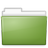
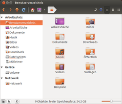
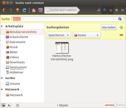
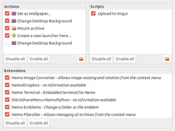

Nemo
Dieser Artikel wurde für die folgenden Ubuntu-Versionen getestet:
Ubuntu 16.04 Xenial Xerus
Ubuntu 14.04 Trusty Tahr
Zum Verständnis dieses Artikels sind folgende Seiten hilfreich:
 Der Dateimanager Nemo ist eine Abspaltung (Fork) des Dateimanagers Nautilus 3.4. Während mit Nautilus 3.6 und neueren Versionen einige wesentliche Merkmale entfallen sind (v.a. die Zwei-Spalten-Ansicht), knüpft Nemo an die Ausstattung früherer Nautilus-Versionen an und baut diese weiter aus, berücksichtigt aber auch Funktionsmerkmale neuerer Nautilus-Versionen.
Nemo bietet mit seinen vielfältigen Funktionen gerade fortgeschrittenen Benutzern eine leistungsfähige Datei-Verwaltung, während sich Nautilus ab Version 3.6 tendenziell eher auf Grundfunktionen beschränkt. Nemos Bedienoberfläche bleibt dabei trotzdem übersichtlich. Bei Linux_Mint mit der Desktop-Umgebung Cinnamon ist Nemo der Standard-Dateimanager. Eine weitere Nautilus-Abspaltung ist Caja.
Installation¶

Nemo kann direkt aus den offiziellen Paketquellen installiert werden. Ab Ubuntu 13.04 muss folgendes Paket installiert werden [1]:
nemo (universe)
 mit apturl
mit apturl
Paketliste zum Kopieren:
sudo apt-get install nemo
sudo aptitude install nemo
Optional ist dagegen die Installation folgender Pakete:
nemo-fileroller (universe, File Roller-Integration)
nemo-gtkhash (universe, GtkHash-Integration)
mit apturl
Paketliste zum Kopieren:
sudo apt-get install nemo-fileroller nemo-gtkhash
sudo aptitude install nemo-fileroller nemo-gtkhash
PPA¶
Aktuellere Versionen können über ein "Personal Packages Archiv" (PPA) [2] bezogen werden. Das Team von Web Upd8  stellt zwei zur Verfügung.
stellt zwei zur Verfügung.
Hinweis:
Vor der Nutzung des WebUpd8-PPAs müssen eventuell andere aktivierte PPAs für Nemo, insbesondere cinnamon-nightly, entfernt werden!
Nemo 3.x¶
Nur für Ubuntu 16.04 oder neuer!
Adresszeile zum Hinzufügen des PPAs:
ppa:webupd8team/nemo3
Hinweis!
Zusätzliche Fremdquellen können das System gefährden.
Ein PPA unterstützt nicht zwangsläufig alle Ubuntu-Versionen. Weitere Informationen sind der  PPA-Beschreibung des Eigentümers/Teams webupd8team zu entnehmen.
PPA-Beschreibung des Eigentümers/Teams webupd8team zu entnehmen.
Damit Pakete aus dem PPA genutzt werden können, müssen die Paketquellen neu eingelesen werden.
Nach dem Aktualisieren der Paketquellen erfolgt die Installation wie oben angegeben.
Nemo 2.x¶
Hinweis:
Vor der Installation aus dem PPA muss unter Ubuntu 14.04 das Paket nemo-data zuerst entfernt werden, da ansonsten die Installation von cinnamon-translations fehlschlägt.
Es werden außer dem Paket cinnamon-translations keine weitere Cinnamon-Abhängigkeiten installiert. Standardmäßig werden in der Unity-Schnellstartleiste alle Nemo-Lesezeichen als Kontextmenü und Kopiervorgänge mit einem Fortschrittsbalken angezeigt. Zudem wurde Nemo so angepasst, dass das Hintergrundbild wie gewohnt direkt mit einem Rechtsklick  auf dem Desktop geändert werden kann.
auf dem Desktop geändert werden kann.
Adresszeile zum Hinzufügen des PPAs:
ppa:webupd8team/nemo
Hinweis!
Zusätzliche Fremdquellen können das System gefährden.
Ein PPA unterstützt nicht zwangsläufig alle Ubuntu-Versionen. Weitere Informationen sind der PPA-Beschreibung des Eigentümers/Teams webupd8team zu entnehmen.
Damit Pakete aus dem PPA genutzt werden können, müssen die Paketquellen neu eingelesen werden.
Nach dem Aktualisieren der Paketquellen erfolgt die Installation wie oben angegeben.
Erweiterungen¶
Beide PPAs enthalten zusätzlich Erweiterungen für Nemo. Beispiele:
nemo-compare, ppa, Dateien über das Kontextmenü
vergleichennemo-dropbox, ppa, Dropbox-Integration
nemo-fileroller, ppa, File Roller-Integration
nemo-gtkhash, ppa, siehe GtkHash
nemo-media-columns, ppa, Anzeige von Metadaten bei Bildern (Exif), PDF- und Musikdateien
nemo-pastebin, ppa, Nutzung von Pastebin-Diensten
nemo-python, ppa, Einbindung der Programmiersprache Python
nemo-rabbitvcs, ppa, Integration von RabbitVCS, das Zugriff auf Versionsverwaltungen wie Subversion ermöglicht
nemo-seahorse, ppa, Seahorse-Integration (das Paket nautilus-seahorse muss vorher deinstalliert werden!)
nemo-share, ppa, Ordnerfreigabe über net usershare (Samba)
nemo-terminal, ppa, Eingebettetes Terminal, welches mit F4 angezeigt oder versteckt werden kann. Weitere Einstellungen können im dconf-Editor unter "org → nemo → extensions → nemo-terminal" vorgenommen werden.

Folder Color¶
Mit Folder Color kann man die Ordnersymbole einfärben. Die Programmautoren stellen ein PPA bereit.
Konfiguration¶
Als Standarddateimanager einrichten¶
Um Nemo anstelle von Nautilus als Standarddateimanager zu setzen, gibt man folgenden Befehl in einem Terminal ein:
xdg-mime default nemo.desktop inode/directory application/x-gnome-saved-search
Zudem kann mit dem dconf-Editorverhindert werden, dass Nautilus weiterhin Symbole auf dem Desktop zeichnet.
gsettings set org.gnome.desktop.background show-desktop-icons false gsettings set org.nemo.desktop show-desktop-icons true
Eine weitere Möglichkeit, Nemo als Standarddateimanager zu definieren, ist, in der Datei /usr/share/applications/nautilus-folder-handler.desktop mit Root-Rechten[3] die Zeile
Exec=nautilus %U
durch
Exec=nemo %U
zu ersetzen.
Hinweis:
Durch diesen Eingriff wird in Unity oder GNOME nicht automatisch auch der Programmstarter[4] von Nautilus durch den von Nemo ersetzt. Dies muss ggf. noch manuell geschehen, für jeden Benutzer separat. Zuständig ist die Datei /usr/share/applications/nautilus.desktop.
Erweitertes Kontextmenü im Starter¶
Wenn Nemo aus dem WebUpd8-PPA installiert wurde, zeigt er bereits standardmäßig Lesezeichen im Kontextmenü nach einem Rechtsklick auf den Starter in der Unity-Schnellstartleiste an. Nemo-Installationen von anderen Quellen kann diese Funktion von Hand nachgerüstet werden. Dazu wird analog der Anleitung für Nautilus vorgegangen, wobei im Skript und den Datei-Bezeichnungen "nautilus" jeweils durch "nemo" zu ersetzen ist.
Bedienung¶
|  |
| Das Homeverzeichnis in Nemo |
Die Bedienung ähnelt der früherer Nautilus-Versionen, dessen Grundfunktionen fast unverändert übernommen worden sind.
Oberfläche¶
Neu in Nemo sind folgende Schaltflächen:
rechts oben in der Symbolleiste:
Umschalten zwischen Brotkrümelnavigation und Adresse in Textform
Suche
die drei Inhalts-Ansichten "Symbole", "ausführliche Liste" und "kompakte Liste"
links unten in der Statusleiste zum Steuern der Seitenleiste:
Ansicht "Orte"
Ansicht "Baum"
Ein- bzw. Ausblenden der Seitenleiste
All diese Befehle sind bis auf die Suche auch über die Menüs wählbar.
Suche¶
|  |
| Dateisuche mit Filtern |
Es gibt zwei Arten der Suche, die je nach Bedarf anzuwenden sind:
Die Suche von Dateien und Ordnern (Schaltfläche rechts oben in der Symbolleiste) erfasst auch die tieferen Verzeichnisebenen ausgewählter Ordner (rekursiv). Zusätzlich kann die Suche auf bestimmte Speicherorte und Dateiformate weiter eingegrenzt werden, indem über das Plus-Zeichen rechts in der gelben Suchleiste weitere Filter gesetzt werden. Dieses Programm-Merkmal ähnelt der Suche in Nautilus 3.6.
Um schnell einen Ordner in einem angezeigten Verzeichnis auszuwählen, kann dessen Name einfach eingetippt werden. Das Getippte wird sofort in einem kleinen Popup-Fenster rechts unten im Dateifenster angezeigt und der erste Ordnerinhalt, der der bisher getippten Zeichenfolge entspricht, ausgewählt. Dies ist insbesondere bei Ordnern mit viel Inhalt nützlich - wenn der Name des auszuwählenden Unterordners bekannt ist. Diese Funktion wurde aus früheren Nautilus-Versionen übernommen.
Zusätzliche Leiste mit Inhalten¶
Über "Ansicht -> Zusätzliche Leiste" oder mit der Taste F3 kann eine zweite, unabhängige Fläche ("Leiste") mit Inhalten eingeschaltet und so eine Bedienoberfläche ähnlich dem Norton Commander hergestellt werden. Eine Auswahl in der Seitenleiste (links) bezieht sich dann immer nur auf die gerade aktive Leiste mit Inhalten.
Erweiterungen¶
|  |
| Erweiterungsmanager |
Nemo bietet zusätzliche Funktionen durch die direkte Integration weiterer Programme bzw. Systemfunktionen ("Nemo Actions"). Diese Funktionen entsprechen denen von Nautilus. Nach der Installation des entsprechenden Pakets sind im Menü "Bearbeiten" und im Kontextmenü folgende Befehle verfügbar, die sich jeweils auf die aktuelle Auswahl von Inhalten (Markierung) beziehen:
"Freigabeoptionen" - Ordner im Netzwerk über net usershare (Samba) freigeben
"Komprimieren ..." - Ordner oder Dateien mit File Roller in ein komprimiertes Archiv packen
"Verschlüsseln ..." - Ordner oder Dateien mit Seahorse (GnuPG) verschlüsseln
Durch die Dropbox-Erweiterung wird der Synchronisationsstatus von Inhalte, die über Dropbox freigegeben sind, durch Zusatzsymbole an den Ordner- bzw. Datei-Hauptsymbolen angezeigt
Auch das Erstellen eigener Aktionen ist nicht sonderlich schwer. Ein Beispiel, um Dateien mit wipe sicher zu löschen:
[Nemo Action] Name=Wipe File Name[de]=Sicher löschen Comment[de]=Dateien/Ordner sicher löschen Exec=/usr/bin/wipe -rf %F Icon-Name=gtk-dialog-warning Selection=S Extensions=any; Quote=double
Aktionen müssen mit der Endung .nemo_action unter:
~/.local/share/nemo/actions/ - benutzerdefinierte Aktionen
/usr/share/nemo/actions/ - systemweite Aktionen (Root-Rechte erforderlich)
gespeichert werden, beispielsweise als wipe.nemo_action. Wer tiefer einsteigen möchte, zieht die Datei /usr/share/nemo/actions/sample.nemo_action und den Abschnitt Links am Ende des Artikels zu Rate.
Damit neu installierte Erweiterungen verfügbar sind, muss Nemo neu gestartet werden.
Skripte¶
Eigene Skripte werden im Kontextmenü unter "Skripte" eingebunden. Die Skripte sind ab Version 2.6.7 im Verzeichnis ~/.local/share/nemo/scripts zu speichern, bei älteren Versionen dagegen noch unter ~/.gnome2/nemo-scripts. Auch hier muss Nemo neu gestartet werden, wenn neue Skripte hinzugefügt werden.
Hinweis:
Die Verwendung vorhandener Nautilus-Skripte ist nicht ohne weiteres möglich, da sich die vordefinierten Umgebungsvariablen unterscheiden. Das Prefix NAUTILUS_* ist durch NEMO_* zu ersetzen.
Arbeiten mit Root-Rechten¶
Wird Nemo mit Root-Rechten gestartet (unter Unity/GNOME:
Alt +
F2 -> gksudo nemo), wird unter der Symbolleiste ein roter Balken mit dem Hinweis "Erhöhte Berechtigungen" angezeigt. Auch aus einem Nemo-Fenster kann mit normalen Benutzer-Rechten über das Kontextmenü ( -> "Als Systemverwalter öffnen") eine Nemo-Instanz mit Root-Rechten für den markierten Ordner geöffnet werden.
Problembehebung¶
Dropbox¶
Die Dropbox-Erweiterungen von Nemo und Nautilus können nicht gleichzeitig installiert sein.
Menüleiste wieder einblenden¶
Wurde über "Menubar -> Ansicht" die Menüleiste ausgeblendet, fehlt offensichtlich ein Maus-Befehl, um sie wieder sichtbar zu machen. Mit der Alt -Taste lässt sie sich temporär wieder einblenden und dann über denselben Menübefehl ggf. auch wieder dauerhaft verankern.
Links¶
nemo-extensions
- Erweiterungen
Nemo
- Archlinux WikiNemo Actions by Alfcx
- Hilfsmittel für PDF-Dateien und mehrNemo File Manager for Ubuntu 13.04/12.10/12.04
- Blogbeitrag, 06/2013Dateimanager
 Programmübersicht
Programmübersicht
- Erstellt mit Inyoka
-
 2004 – 2017 ubuntuusers.de • Einige Rechte vorbehalten
2004 – 2017 ubuntuusers.de • Einige Rechte vorbehalten
Lizenz • Kontakt • Datenschutz • Impressum • Serverstatus -
Serverhousing gespendet von